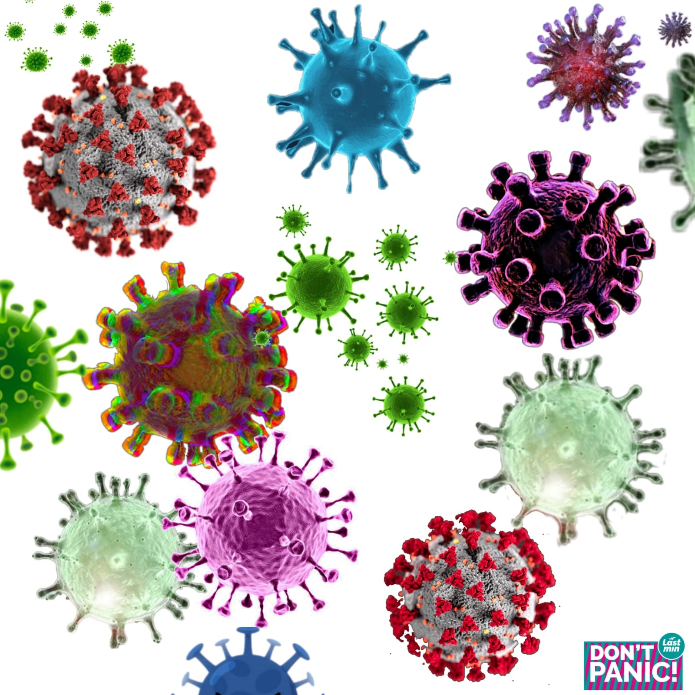

| Coronavirus Disease 2019 (COVID-19) was declared as pandemic by the World Health Organization on March 11th, 2020 mainly due to the speed and scale of the transmission of the disease. Before that, it started as an epidemic in mainland China with the focus being firstly reported in the city of Wuhan, Hubei province in February 26th. The etiologic agent of COVID-19 was isolated and identified as a novel coronavirus, initially designated as 2019-nCoV. Later, the virus genome was sequenced and because it was genetically related to the coronavirus outbreak responsible for the SARS outbreak of 2003, the virus was named as severe acute respiratory syndrome coronavirus-2 (SARS-CoV-2) by the International Committee for Taxonomy of Viruses.
The origin and source of the SARS-CoV-2 remains unknown, although the initial cases have been associated with the Huanan South China Seafood Market where snakes, birds and other animals such as bats were sold. |
|
Considering that many of the early patients worked in or visited the market in contrast to the exported cases, it was suggested either a human to human transmission or a more widespread animal source. A suspected bat origin was suggested after 96 % genome sequence identity was demonstrated between SARS-CoV-2 and another coronavirus named Bat-CoV-RaTG13 isolated from bat species which colonized a province nearly 2000 km away from Wuhan. Pangolins were also suggested as natural host of coronaviruses. However, evidence of human to human transmission became strongly supported on January 22nd, 2020 after a visit conducted by a WHO delegation to the city of Wuhan . Since the first outbreak recognized in February 2020, the disease spread rapidly around the world. According to the European Centre for Disease Prevention and Control, as of 17th of June 2020; 8,142,129 cases of COVID-19 and 443,488 deaths have been reported worldwide since 31st December 2019. American continent was among the ones with highest number of cases (3,987,543) with United States and Brazil the leading countries (2,137,731 and 923,189 respectively).
Several SARS-CoV-2 samples have been isolated from different people and genomic sequences have been available aiming to better understand the virus and to provide information for the development of diagnostic tools and a potential vaccine. To date more than 42,000 SARS-CoV-2 RNA genomes have been uploaded in the Global Initiative on Sharing All Influenza Data, known as GISAID.
| SARS-CoV-2 belongs to the beta subgrouping of the Coronaviridae family and are enveloped virus containing a positive-sense, single- stranded RNA with 29,891 bases of size. The genome encodes for 29 proteins involved in the infection, replication and virion assembly process. Like other coronaviruses they are characterized by the presence of crown-like spikes on their surface. The spike S protein from SARS-CoV-2 contains a receptor binding domain (RBD) that binds the human angiotensin-converting enzyme 2 (ACE2) and thereby, promotes membrane fusion and uptake of the virus into human cells by endocytosis. The RBD present in the spike protein is the most variable region of the coronavirus genome. Structural and biochemical studies have suggested that RBD from SARS-CoV-2 binds with high affinity to ACE2 compared to other SARS-CoV viruses. However, the human ACE2 protein variability may also be a factor for the high binding affinity. |

|
SARS-CoV-2 can be transmitted human to human by respiratory droplets, close contact with diseased patients, and possibly by fecal-oral and aerosol contact. It was recently shown that airborne transmission is highly virulent and represents the dominant route to spread the disease. This finding was obtained based on the analysis of the trend and mitigation measures in three different cities considered epicenters of COVID-19: Wuhan, China, Italy, and New York City, in the period from January 23 to May 9, 2020. Importantly, this result reveals that among the adopted mitigation measures such as social distancing and wearing of masks, the difference with and without mandated face covering represents the determinant in shaping the trends of the pandemic and spread of the disease. Majority of SARS-CoV-2 infected individuals (80 %) are asymptomatic or present mild symptoms most likely due to a good immune response able to control the advance of the disease.
| There is evidence that these asymptomatic people can infect others with SARS-CoV-2. In the other hand, symptomatic individuals may evolve to more severe symptoms and eventual death. The best way to prevent transmission and illness is to avoid being exposed to the virus. Therefore, some recommendations include wash hands often, avoid close contact, cover mouth and nose with a mask, cover coughs and sneezes, and clean and disinfect frequently touched surfaces daily. In this regard, wearing of face masks in public corresponds to the most effective means to prevent interhuman transmission. |
|
- Upon cell contact, the virus can enter the cells in two ways, either via endosomes or plasma membrane fusion. In both ways spike proteins (S1 e S2) from SARS-CoV-2 mediate attachment to the cell membrane by binding to the ACE2 as the entry receptor. On the other hand, virions are taken up into endosomes, spike proteins are activated by cathepsin L or alternatively by transmembrane protease serine 2 (TMPRSS2) in close proximity to ACE2 receptor, which initiates fusion of the viral membrane with the plasma membrane. The latter mechanism is less likely to trigger an antiviral immune response and is more efficient for viral replication.
- Once inside the cell, viral RNA is released, and polyproteins are translated. Coronavirus genomic RNA encodes nonstructural proteins (NS), that play a critical role in viral RNA synthesis, and structural proteins which are important for new virion assembly. First NS proteins 1a and 1ab are translated and cleaved by the papain-like protease (PIpro) and 3C-like protease (3CLpro) to form functional NS proteins such as helicase or RNA-dependent RNA polymerase complex (RdRp). Structural proteins S1, S2, envelope (E), membrane (M) are translated by ribosomes bound to the endoplasmic reticulum (ER) and presented on its surface as a preparation of virion assembly. The nucleocapsids (N) remain in the cytoplasm and are assembled together with the genomic RNA. The virion precursor is then transported from the ER through the Golgi apparatus to the cell surface via vesicles. Finally, virions are released from the infected cell through exocytosis and a new replication cycle begins.